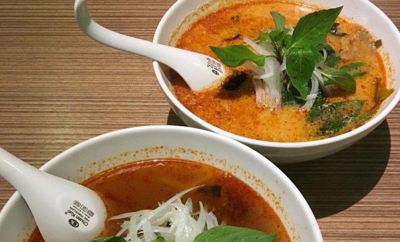

越南河粉專區

👉牛肉河粉$80
很台式的生牛肉河粉，先夾好生的牛肉進碗裡，再用熱騰騰的湯底去燙熟，此時的牛肉會是最嫩的！配上Q談的河粉真低讚呀~
比起有名的小河，我更喜歡新馨的高cp值，
少人知道的好店，更省去排隊的時間！
有次外帶回去吃牛肉還是很嫩，河粉也不會爛耶
2019.03.28
很台式的生牛肉河粉，先夾好生的牛肉進碗裡，再用熱騰騰的湯底去燙熟，此時的牛肉會是最嫩的！配上Q談的河粉真低讚呀~
比起有名的小河，我更喜歡新馨的高cp值，
少人知道的好店，更省去排隊的時間！
有次外帶回去吃牛肉還是很嫩，河粉也不會爛耶
2019.03.28
新馨麵館
營業時間：10:30-14:30 / 17:30-20:30公 休 日：週日
電 話：(06)209-6809
地 址：704台南市北區開元路278號
👉生牛肉酸辣湯河粉$90
一樣是台式的生牛肉河粉，也是台南最有名的台式牛河店，
店裡的桌椅是用學校的課桌椅，也莫名增添了一種懷舊感，
波波是在難得的飄著雨的冷颼颼的日子裡前來小河，
沒等太久的排隊就能吃上一碗牛河，一大享受呀！
小河真的是連在地人都常吃的店，也是建議一開店的時間就要去呦~翻桌率算快
2019.03.28
一樣是台式的生牛肉河粉，也是台南最有名的台式牛河店，
店裡的桌椅是用學校的課桌椅，也莫名增添了一種懷舊感，
波波是在難得的飄著雨的冷颼颼的日子裡前來小河，
沒等太久的排隊就能吃上一碗牛河，一大享受呀！
小河真的是連在地人都常吃的店，也是建議一開店的時間就要去呦~翻桌率算快
2019.03.28
小河
營業時間：11:00-14:30 / 17:00-21:00公 休 日：週一
電 話：(06)303-7403
地 址：710台南市永康區中山南路105號
說到越南河粉，不能沒有鴻公公吧！16.30開門17.就大排長龍的美食名店~
7種肉類7種湯底，有49種選擇任你挑選~
肉類：生牛肉/熟牛肉/雞肉/豬肉/什錦/魚片/香茅雞(炸的另外放)
湯底：清湯/酸湯/沙茶/椰奶/酸辣🌶️/咖哩🌶️/椰香酸辣🌶️
👉生牛肉椰香酸辣湯河粉$160（大）內用還能選擇特大$260
有🌶️真的辣得過癮，侵略性的辣度刺激著喉嚨，尾韻又有酸跟椰奶香來融合，配合的天衣無縫！
店內免費供應的甜甜紅茶也是大家解辣的好選擇XDDD
7種肉類7種湯底，有49種選擇任你挑選~
肉類：生牛肉/熟牛肉/雞肉/豬肉/什錦/魚片/香茅雞(炸的另外放)
湯底：清湯/酸湯/沙茶/椰奶/酸辣🌶️/咖哩🌶️/椰香酸辣🌶️
👉生牛肉椰香酸辣湯河粉$160（大）內用還能選擇特大$260
有🌶️真的辣得過癮，侵略性的辣度刺激著喉嚨，尾韻又有酸跟椰奶香來融合，配合的天衣無縫！
店內免費供應的甜甜紅茶也是大家解辣的好選擇XDDD
鴻公公
營業時間：16:30-21:30公 休 日：週二
電 話：0916-770-291
地 址：702台南市南區水交社路352號

👉生牛肉酸辣湯河粉$150
O’lala是所有越南河粉店當中，環境最乾淨高級，
感覺比新馨小河多出來的60塊大概就是在吃氣氛，食物本身就正常發揮不會雷，
冷氣也夠強，不像鴻公公會狂噴汗XD，
想要吃完還保持美美的一定要選擇O’lala！
2019.03.28
O’lala是所有越南河粉店當中，環境最乾淨高級，
感覺比新馨小河多出來的60塊大概就是在吃氣氛，食物本身就正常發揮不會雷，
冷氣也夠強，不像鴻公公會狂噴汗XD，
想要吃完還保持美美的一定要選擇O’lala！
2019.03.28
O’lala
營業時間：11:30-14:00 / 17:30-21:00公 休 日：週一
電 話：(06)213-5158
地 址：700台南市中西區永福路一段12號